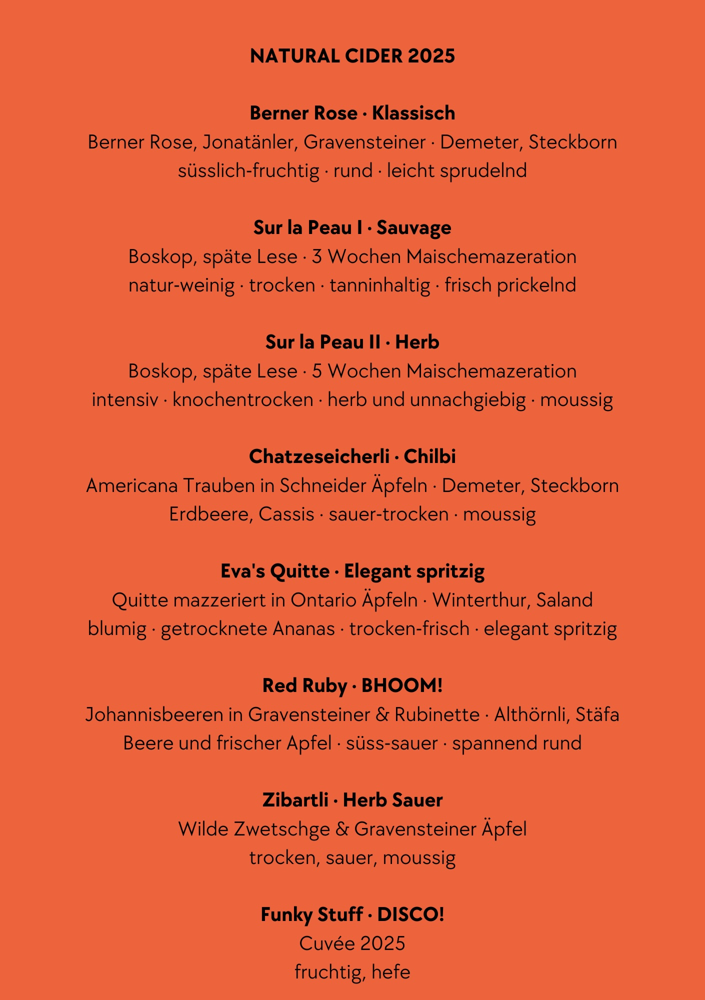
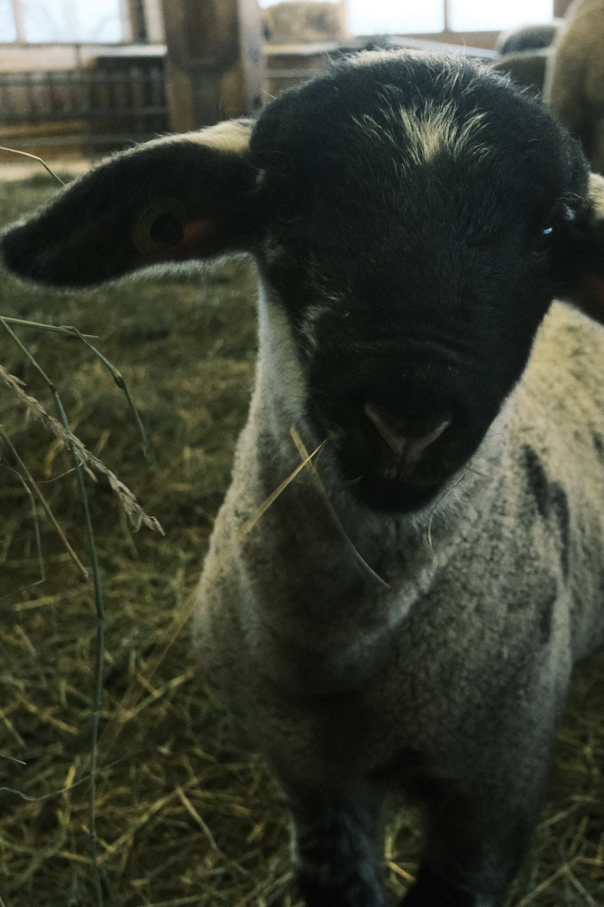
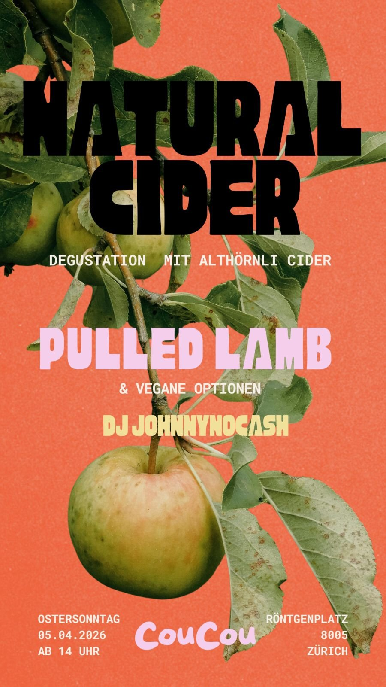
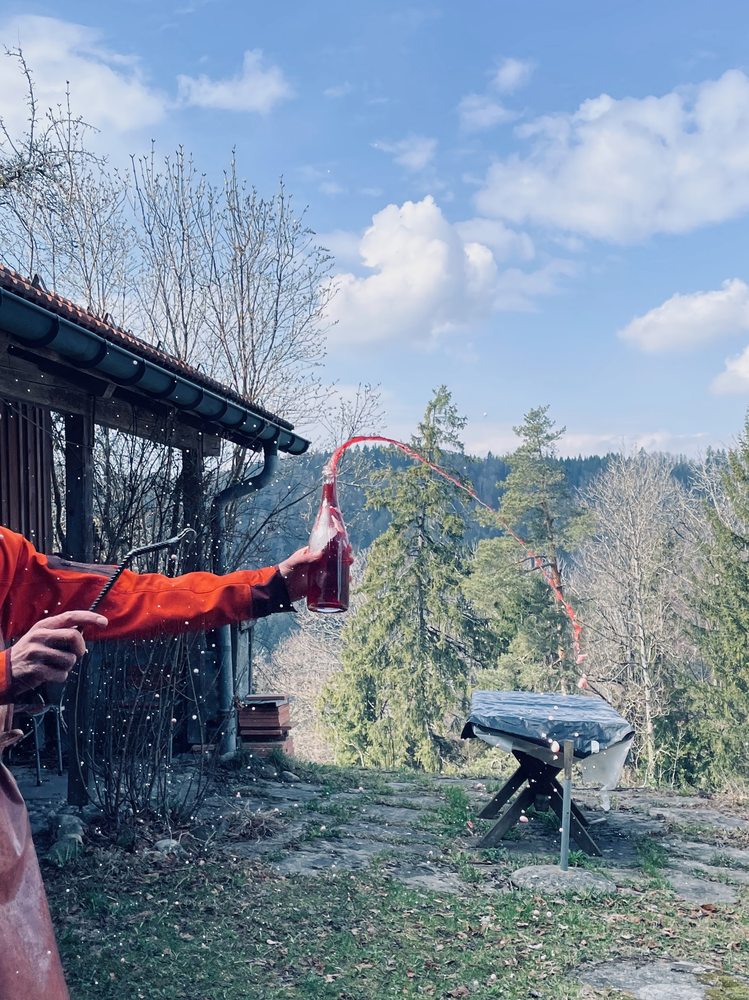
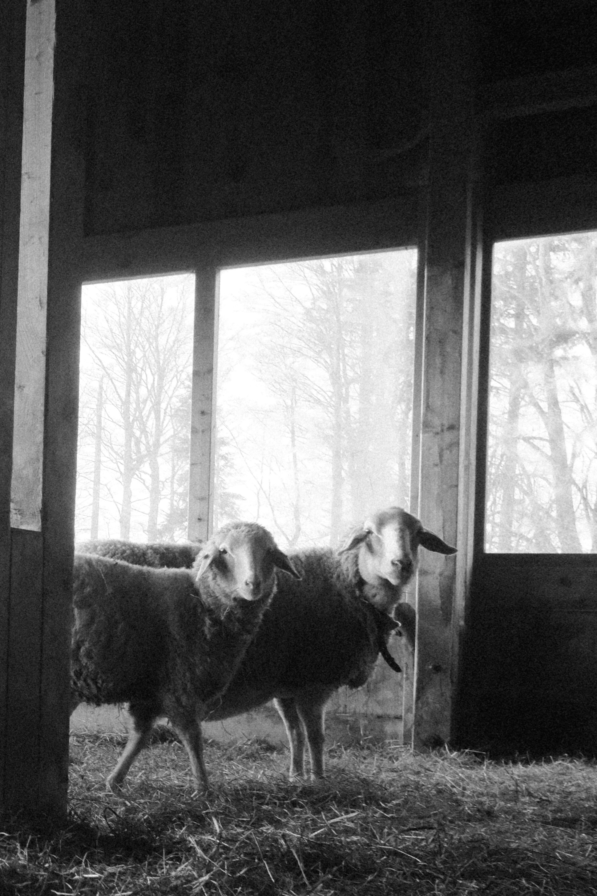
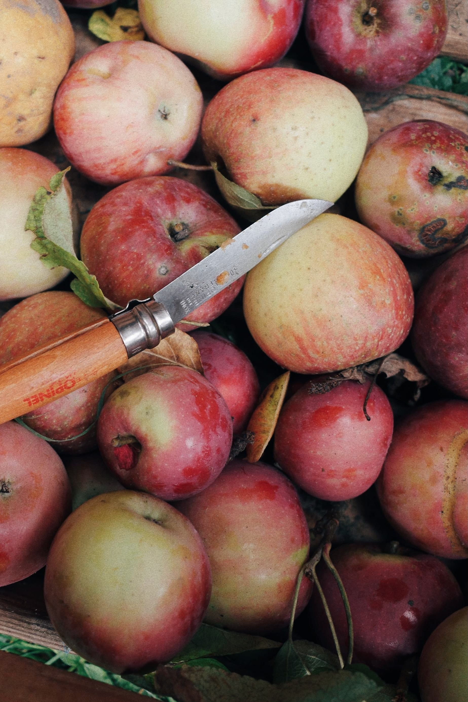

News
Aktuelles
Aktuelles
vom Hof.

23. März 2026
Chlöpfmoscht Kreationen 2025

13. März 2026
Newborn

9. März 2026
Erste Degustation des Jahrgangs 2025 im Restaurant Coucou

26. Februar 2026
Degorgieren des Chlöpfmoschts

7. November 2025
Winterdomizil Stall

28. Oktober 2025
Holzen

10. Oktober 2025
Äs härbschtelet
20. September 2025
Althörnli Soundtrack
13. September 2025
Ab in die Presse

2. September 2025
Obsterntezeit...